3 大语言模型基础
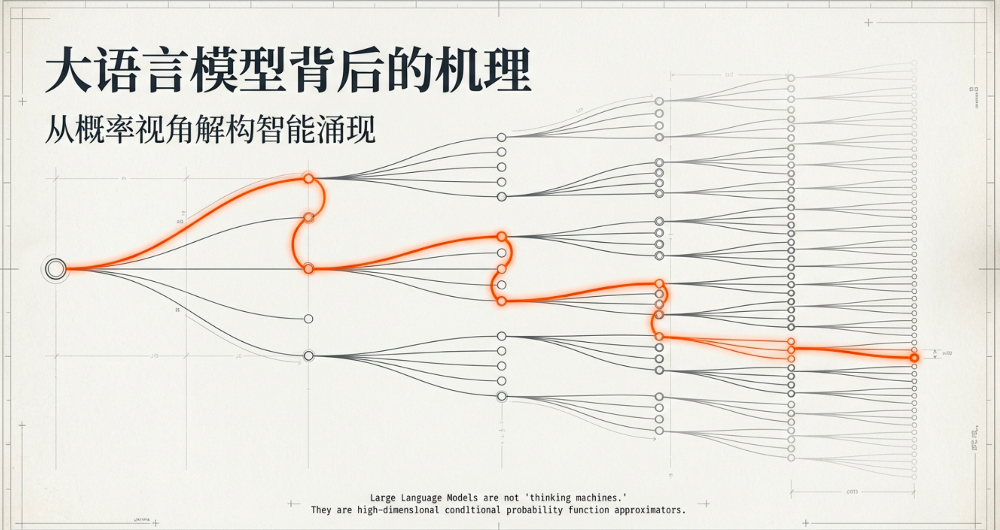
语言模型，指的就是一个函数（或规则）， 它接收“已经出现的 token 序列”， 输出“下一个 token 的概率分布”。 也就是对\(P(\text{下一个 token} \mid \text{已有 token})\)这个条件概率的建模。
你可以把“语言模型”想成一个补全机器，你给它一句话的前半截：我今天去___
它要猜后面更可能出现什么：上班/学校/医院…
这件事在现实中很常见：输入法联想、语音识别、机器翻译、聊天机器人——都需要“下一词更像什么”。
这样就很好理解了，从 n-gram 到神经网络再到 Transformer，本质都是在近似同一个条件概率映射；差别在于近似器的表示能力、参数共享方式、以及对长程依赖的处理。
大语言模型的核心，就是在做一个高维条件概率函数\(P(t_i \mid t_1, \ldots, t_{i-1})\)的函数近似。从 n-gram → 神经网络 → Transformer，本质上从来没变过目标函数，只是在不断升级「函数近似器的能力与结构」。
n-gram是 查表式近似，直接存答案，这和 RL 里的 tabular Q-learning 是一模一样的思想。神经网络做的不是“算得更快”，而是换了一种存在方式，不再为每个上下文单独存一个概率分布，而是学习一个能在上下文空间上连续泛化的函数。
这一步，和强化学习从 Q-table → DQN 是同一件事。
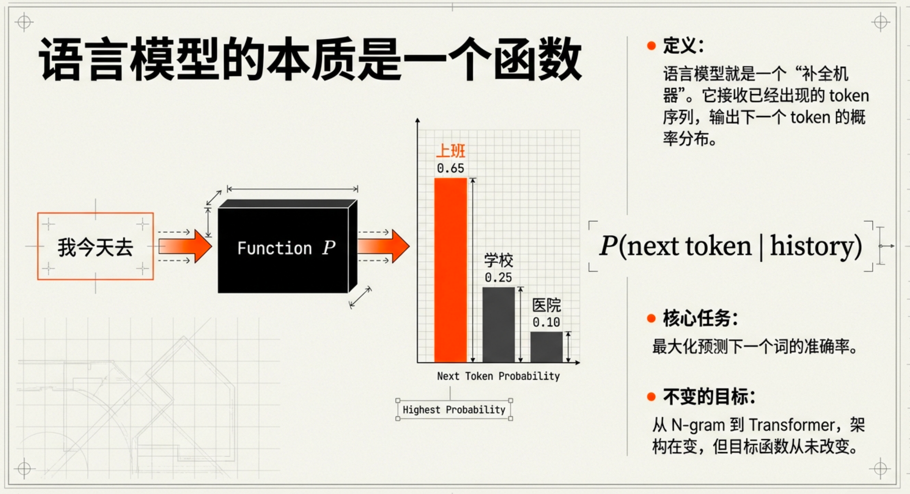
3.1 语言模型与 Transformer 架构
3.1.1 从 N-gram 到 RNN
大语言模型的语言建模思想，沿着「统计语言模型 → 神经语言模型（RNN / CNN） → 基于注意力的神经语言模型（Transformer）」逐步演化。
语言模型的根本目标是，为任意一个词序列定义一个联合概率。
P(t1,t2,…,tn)
而它在实现上，是通过不断输出“下一个 token 的条件概率分布”来完成这件事的。
联合概率（joint probability）指的是多个随机事件“同时发生”的概率。
所谓“统计语言模型”（Statistical Language Model），本质上就是一句话：把语言当成一个概率问题来处理。它要解决的核心问题只有一个：在已经出现了一段文字的情况下，所有可能的下一个词，各自出现的概率是多少？
更具体的说，语言模型本身在解决的问题是：给定一段已出现的序列 x₁…xₙ，对词表中每一个候选 token t，计算条件概率 P(t | x₁…xₙ)。
条件概率公式：\(P(A \mid B) = \frac{P(A, B)}{P(B)}, \quad P(B) > 0\)
条件概率 = 联合概率 ÷ 条件本身的概率
从 n-gram 到 RNN，再到 Transformer，本质上都是在做同一件事——输出一个“下一个 token 的概率分布”。
到这里为止，是语言模型的全部职责。它的输出是一个概率分布，而不是一个 token。
它并不负责选择某个概率最大的token，然后接到已出现token的尾部。
**语言模型本身是一个“概率分布定义器（probability estimator）”，
而不是一个“文本生成器”。**
文本生成是一个额外的过程，
它需要在语言模型给出的条件概率分布之上，再引入采样、贪心、top-k、top-p 等解码策略。
为什么语言模型要把语言当成一个概率问题？
把语言当成概率问题，并不是在说“语言的本质就是概率”，而是在说这是一个人为选择的建模视角，不是事实陈述。
一旦你选择了“概率”这个视角，p(xi | x1, …, x(i−1))公式不是“语言模型的选择”，而是概率论强制你必须遵守的结构约束。
而概率论里有一条铁律，“一连串事件按顺序发生的可能性”，那你唯一合法的组合方式就是，联合概率 = 条件概率 × 条件概率 × …
需要强调的是，联合概率是语言模型在数学上的“定义目标”，而不是模型在运行时的“计算对象”。在实际实现中，联合概率仅通过链式法则被隐式定义，模型只显式建模和计算条件概率：
\(P(t_i \mid t_1, \ldots, t_{i-1})\)
这不是“语言模型用的公式”，这是“任何顺序事件模型”都逃不开的规则。
在语言模型中， 每一个 token 的生成都可以被视为一次随机事件， 整个句子对应的是一串有序随机事件的联合概率。
你可能觉得，一个序列，他们同时出现的概率不应该是：p(t1) * p(t2) * … * p(tn)吗。
如果你这么写，那你在隐含地假设一件事，这些 token 彼此独立。而语言里，这个假设不成立，所以不能这么算，语言中的 token 之间有极强的依赖关系。
从最底层的概率论说起，假设你有一串按顺序发生的事件：X1,X2,…,Xn
你问的问题是“这一整串事件发生的概率是多少？”，那么在概率论里，没有第二种合法写法：P(X1,…,Xn)=P(X1)⋅P(X2∣X1)⋅⋯⋅P(Xn∣X1,…,Xn−1)
这是联合概率在顺序事件下的定义性展开，只有在“完全独立”的极端假设下，链式法则才会退化成简单乘积。也就是说链式法则永远成立 “独立”只是一个 特殊、退化的情况。
所以选择了将语言建模成概率问题，就必须遵守链式法则，那么语言模型的“唯一自由度”在哪里？
答案是，如何近似每一个条件概率项：P(ti∣t1,…,ti−1)
- n-gram：截断历史
- RNN：把历史压缩成状态
- Transformer：对历史做显式条件化（attention）
3.1.1.1 1 n-gram：语言建模的起点（统计时代）
虽然链式法则在数学上永远成立，但“直接用它计算”在语言建模中是原则上不可行的。它不只是算得慢，而是你连要算什么都无法枚举。
链式法则写成：\(P(x_1, \ldots, x_n) = \prod_{i=1}^{n} P(x_i \mid x_1, \ldots, x_{i-1})\)
问题在于，每一个条件概率项的条件空间是天文级别的。
为什么？因为词表大小为\(|V|\) ，长度为\(k\)的前缀可能性是：
\(|V|^k\)
也就是说，第 i 个条件概率
理论上需要为
\(|V|^{i-1}\)
种不同上下文各存一个分布，状态空间无限增长，无法穷举。
词表是什么？
词表（vocabulary，简称 vocab）就是： 一个语言模型“允许出现的所有最小符号（Token）的清单”。
词表大 → 表达更细，词表小 → 序列更长、组合更多
我们现实中实现的所有语言模型，都是近似，真实语言的“完整概率模型”在理论上不可实现。
n-gram 正是为了处理“链式法则在语言中不可直接计算”这个问题而出现的，但n-gram 并没有解决“链式法则不可直接计算”的问题， 它只是把这个问题缩小到一个人类能处理的规模。
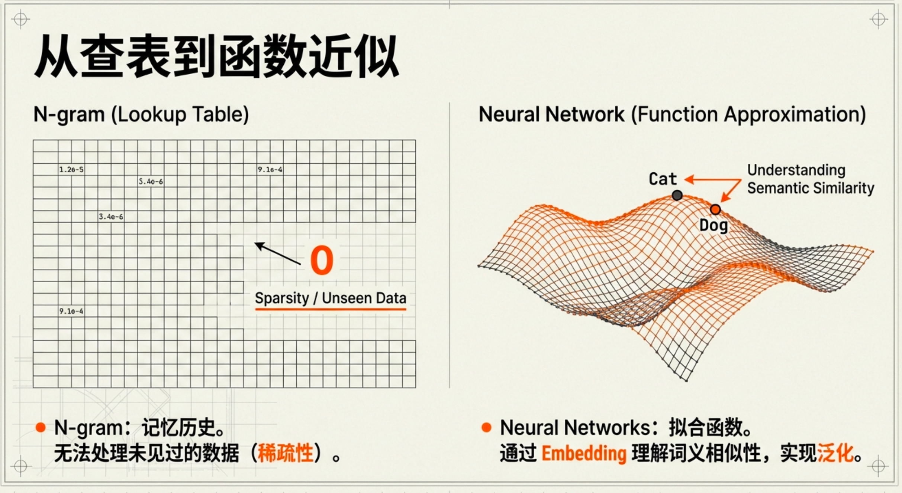
它引入了马尔可夫假设，但它≠马尔可夫假设本身。n-gram把语言问题， 在“马尔可夫假设”之下做了一个具体实现。
马尔可夫假设，即未来的状态，只依赖于最近的若干个过去状态，而与更早的历史无关。
翻成人话就是说，我不记得全部过去，只记住“最近这点”。
具体是什么意思呢，之前我们提到过，语言模型要做的事情本质上就是给定一个序列，然后输出下一个token概率分布。
在没有可泛化的函数近似器之前，条件概率函数无法在高维上下文空间中被有效表示与泛化， 因此只能通过引入马尔可夫假设， 用 n-gram 对条件概率进行结构性简化。
这就有点像强化学习的Q-learning面临的情况，当状态和动作空间是连续的时候，Q(S,A)这个表格变难以应对，这个时候需要深度神经网络。
即当状态 / 条件空间巨大或连续时， “查表式”的概率 / 价值函数定义会彻底失效， 必须引入函数近似。
n-gram假设只看最近 n−1 个词，更早的，统统当不存在。数学上就是一个 (n−1) 阶马尔可夫假设：
\[ P(w_t \mid w_1, \ldots, w_{t-1}) \approx P(w_t \mid w_{t-(n-1)}, \ldots, w_{t-1}) \tag{3.1}\]
| n | 模型 | 依赖关系 |
|---|---|---|
| 2 | Bigram | \(P(w_t \mid w_{t-1})\) |
| 3 | Trigram | \(P(w_t \mid w_{t-2}, w_{t-1})\) |
| n | n-gram | \(P(w_t \mid w_{t-(n-1)}, \ldots, w_{t-1})\) |
也就是说，如果n等于2，当前token的前一个token就能完全决定当前token。
这个时候，下一token的概率分布怎么计算呢？
这些概率可以通过在大型语料库中进行最大似然估计(Maximum Likelihood Estimation,MLE) 来计算。这个术语听起来很复杂，但其思想非常直观：最可能出现的，就是我们在数据中看到次数最多的。
例如，假设n为2，条件概率函数利用最大似然估计，可以近似为：
\[ P(w \mid h) = \frac{\mathrm{count}(h, w)}{\sum_{w'} \mathrm{count}(h, w')} \tag{3.2}\]
h ：历史上下文（history），即前面的 n-1 个词
w ：下一个词
count(h,w) ：序列 (h,w) 在语料中出现的次数
分母：所有以 h 开头的序列出现次数之和（即 h 出现的总次数）
具体例子（Bigram）：
语料：“I am Sam. I am Tom. I am happy.”
计算\(P(am \mid I)\)：
count(I,am)=3，count(I)=3，所以\(P(am \mid I)\) = 3/3 = 1。
假设要计算\(P(Sam \mid am)\)，结果为1/3。
n-gram有什么特点呢，它的特点是，对“语料中出现过的每一个上下文”提前算好了，它本质上学到了一章张表，你可以把它想象成这个（bigram模型）：
history = "I" → { am: 1.0, like: 0.0, ... }
history = "am" → { Sam: 0.33, Tom: 0.33, happy: 0.33, ... }
history = "Sam" → { .: 1.0 }
...因为它要通通提前算一遍，一旦token过多，上下文过长，它就难以招架了。
更严格地说，n-gram 存的是条件频数，概率由频数估计得到。
实际系统中通常会使用平滑技术，避免未见事件概率为 0。
N-gram的局限：
稀疏问题（没见过 ≈ 不可能）
语言组合爆炸多。即使你有海量文本，很多 上下文 → 下一词 的组合仍然没出现过。n-gram 的计数：没见过就是 0 次 → 概率接近 0
现实：没见过不代表不合理，只是数据不够
这会导致模型很“保守”，不敢生成新组合。
相似词完全不共享信息
n-gram 只把词当“ID”，cat 和 dog 在它眼里毫无关系。你见过：I have a cat
但没见过：I have a dog
n-gram 可能就给 dog 很低概率（因为计数不够）
它不会“举一反三”。
上下文窗口固定且短（看不远）
tri-gram 只看 2 个词。你想看更远？n 变大，组合更爆炸，稀疏更严重，参数表更大。你会看到人们做“补丁”，这就是所谓的“平滑”（smoothing），给没见过的组合也分一点点概率，别让它变 0。
3.1.1.2 2 前馈神经网络语言模型 (Feedforward Neural Network Language Model)
为了n-gram的局限，才逐步演化出前馈神经网络语言模型（FNN LM）。之前说过，n-gram 的两个致命洞：
- 稀疏：很多上下文没见过 → 计数为 0
- 不懂相似：dog 和 cat 完全不共享经验
所以最原始的改进想法是：“能不能把词从‘ID’变成‘带含义的向量’，让相似词离得近，这样就算没见过也能猜得出来？”
这就引出了 词向量/词嵌入（embedding），以及 用一个函数（神经网络）去输出概率。
词嵌入（embedding）
把每个词映射成一个小向量，比如 50 维、100 维。
cat → 一串数字
dog → 另一串数字
训练后它们会变得“接近”（在某种空间里）
这样子，模型能够了解词与词之间的相似性。
正如之前提到过的，语言模型的核心就是要表示条件概率函数P，函数的输入是已有序列，输出是下一token的概率分布。
在n-gram方法里面，是以填表的形式近似该函数，而这个时候，使用神经网络来近似P函数。
此时的输入为词向量，因为计算机只认识数字，它看不懂你的自然语言。
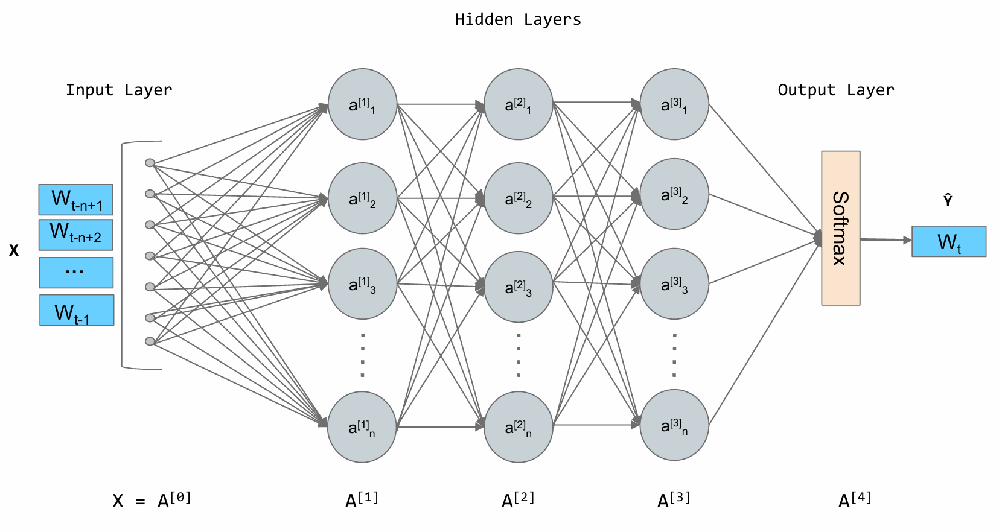
从n-gram到前馈神经网络语言模型，其中思路没有区别，输入都是token序列，只不过后者的token被表示为向量，模型是训练得来的，而前者是通过提前计算频率得到概率分布。
我觉得这个P函数非常的重要。
它怎么训练呢？
如果完全不用“训练”这个概念，会发生什么？
如果你只是随机初始化一个 FNN，不训练，直接用，那它的行为就是每个词概率几乎随机，而且和真实语言毫无关系。
所以你一定需要一个机制，让模型做一次预测，被现实纠正，然后稍微变好，再重复无数次。
这就引出了训练的三要素：数据 + 目标 + 纠错机制。
人们最早是如何一步步想到“怎么训练”的？
逻辑其实很自然，我们有大量文本（小说、新闻、网页），文本天然是一个“顺序”，顺序天然包含一个监督信号，即前面的词 → 后面的词。语言模型的训练数据，是“免费自带答案的”。你不用人工标注。
为了解决它，引入的最原始训练思路是什么？
使用监督学习：模型先猜，真实答案在后面，错了就改。
输入：前面的几个词（上下文）
正确答案：真实文本里的下一个词
它替代了人工规则、人工打分这些旧做法。
那么FNN LM 的一次完整训练“发生了什么”？
Step 1：把上下文变成数字（embedding）
每个词 → 一个向量
前面的 n−1 个词 → n−1 个向量
拼在一起，作为神经网络输入
Step 2：前馈神经网络给出“猜测”
神经网络输出的不是概率，而是一堆分数：
[ -1.2, 0.3, 4.7, ... ]每个分数对应词表里的一个词。
Step 3：Softmax —— 把“分数”变成“概率”
Softmax把一堆任意分数，变成“全是正的、加起来等于 1”的概率。
Step 4：和“正确答案”对比 —— 损失函数
现在关键来了。真实答案是一个词，比如：学校。模型却给了它 0.62。
那我们自然会问一句非常人类的话，“你应该更确定一点，为什么只给 0.62？”
这就引出一个概念，损失函数（loss）
常用损失是交叉熵（等价于最大化真实下一个 token 的对数概率）。
真实 token 的概率越高，loss 越小。
损失函数是用来衡量模型对自己这次预测结果的不满意程度的。具体来说，损失函数的值越小，说明模型对自己的预测越满意，预测结果越接近真实情况；损失函数的值越大，说明模型对自己的预测越不满意，预测结果与真实情况相差越大。在语言模型中，损失函数通常会根据模型预测的词的概率分布与真实答案之间的差异来计算，以此来量化模型预测的准确性和可靠性。
Step 5：反向传播 —— 真正“学”的地方
现在你有了一个数，损失。接下来系统会自动做一件事，沿着“谁导致了这个错误”，一层一层把责任往回分，然后微调每个参数。这一步叫 反向传播，但你不用记名词，只记这句话，谁让模型猜错了，谁就少说一点话。某个权重让错误变大 → 减小它，让正确概率变大的 → 强化它。
3.1.1.3 3 RNN / LSTM：第一次“学会记忆”
FNN上下文窗口是固定大小的。为了预测下一个词，它只能看到前 n−1 个词，再早的历史信息就被丢弃了。
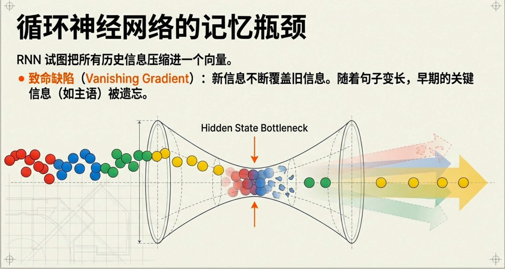
FNN LM只看“最近固定数量的词”，然后猜下一个词。比如只看最近 3 个词：地铁 上 看到了 ___
问题来了，如果你只给它这 3 个词，它根本不知道：是在哪个城市，是谁在看，是什么时间背景。这个空位，可以是任何东西。
那我把窗口调大一点不就行了？
你可能会自然想到，“那我别看 3 个词了，我看 10 个、50 个、100 个？”
现实是FNN LM 做不到这一点，原因很直观，每多看一个词输入就变得更长、更复杂，参数量暴涨、训练变慢、泛化变差。所以 FNN LM 有一个硬限制，它只能看一个固定、很短的窗口。
那么RNN 的想法的思想是什么呢？
它每一步，「我不只看新来的词，我还带着一个‘到目前为止的记忆’」
这个“记忆”，你可以把它想成一句话，“我目前对整段历史的理解摘要”
为了打破固定窗口的限制，循环神经网络 (Recurrent Neural Network, RNN) 应运而生，其核心思想非常直观：为网络增加“记忆”能力。RNN 的设计引入了一个隐藏状态 (hidden state) 向量，我们可以将其理解为网络的短期记忆。
他们怎么训练呢，不需要知道真实的概率分布，只需要知道下一个正确token是什么，而文本本身就有了下一个token，所以可以直接训练。
RNN 在训练时，会把一句话按时间展开， 每读一个 token，就用当前状态预测下一个 token， 并立刻算一次 loss。 一整句话读完后，把所有时间步的 loss 加起来， 再把错误沿着时间和网络结构一起反向传播， 去调整那一套共享的参数。
现在你已经有 RNN 了，而且你已经知道它怎么训练。那 RNN 在现实里，最让人崩溃的问题是什么？
它“记不住重要的旧信息”。一个非常直观的例子：
读下面这句话（故意拉长）。
我昨天在北京出差的时候，
因为天气突然下雨，
又正好遇到地铁故障，
所以今天早上我_____
你作为人，很自然知道后面可能是迟到了、没赶上会议，但你靠的是什么？你一直记得“因为……所以……”这一层因果关系，你一直记得“我”是主语。
RNN 的问题在于，它的记忆是一个不断被更新的“状态”，新信息进来，会覆盖旧信息，时间一长，早期的重要信息就被“冲淡了”。结果导致句子一长，RNN 会“失忆”。
RNN处理长句子容易丢主语、搞错时态、断裂因果、前后矛盾。训练时你会看到，梯度要么越来越小（改不动），要么越来越大（训练炸掉）RNN 的“记忆链条”太脆弱，传不远。
人们做了很多尝试，比如调学习率、换激活函数、把 RNN 堆深一点。但结果都差不多。于是一个非常关键的观察出现了，问题不在“算”，而在“记忆怎么被保存和更新”。换句话说，RNN 把“短期信息”和“长期信息” 混在同一个状态里了。这就是根本矛盾。
为了解决它，引入了LSTM。既然有些信息很重要、要记很久，那我就专门给它一条“不容易被冲掉的通道”。这条通道，就是 LSTM 最大的变化。
LSTM 把“记忆”一分为二
- 长期记忆（该记就记，不轻易改）
- 当前理解（随时更新，用来做预测）
你可以把它想成一个保险柜 + 一个便签纸。保险柜里的东西，不轻易动，便签纸随时写、随时换。
其核心创新在于引入了细胞状态 (Cell State) 和一套精密的门控机制 (Gating Mechanism) 。
这些门包括：
遗忘门 (Forget Gate)：决定从上一时刻的细胞状态中丢弃哪些信息。
输入门 (Input Gate)：决定将当前输入中的哪些新信息存入细胞状态。
输出门 (Output Gate)：决定根据当前的细胞状态，输出哪些信息到隐藏状态。
现在问题来了，哪些信息该长期记？哪些该立刻忘？
这不能靠人写规则。 所以 LSTM 又加了一个非常聪明的设计，让模型自己决定“记 / 不记 / 忘”。
LSTM加了“开关”，它在每一步都会做三件非常朴素的事：
- 决定哪些旧记忆要留下
- 决定哪些新信息值得记进去
- 决定当前要用哪些记忆来做预测
它有一条专门的“长期记忆通道”，不会轻易消失。它每一步都会判断，该忘什么？该记什么？
LSTM 是第一个在工程上， 能稳定学习“很早的信息影响很晚的结果”的模型。
3.1.1.4 4 Transformer：真正奠定“大语言模型”
既然 LSTM 能记住长期信息， 那为什么还要 Transformer？
- 痛点 1：慢
LSTM 是 一步一步走的，token1 → token2 → token3 → token4 → …
第 10 个 token必须等前 9 个 token 全算完，没法并行，序列一长，训练就极慢，📌 在大规模数据（网页、书籍）上，这一点是致命的工程瓶颈。
- 痛点 2：“记忆”仍然是被压缩的
即使是 LSTM，它的长期记忆仍然是一个固定长度的向量，很多信息被“挤”在一个盒子里。结果是记住了一点整体感觉，但精确细节可能已经丢了。
- 痛点 3：远距离关系仍然不好学
LSTM 的设计是信息一步一步往后传，这意味着第 1 个 token 要影响第 100 个 token，必须穿过 99 次“中转”。哪怕 LSTM 比 RNN 强， 这条路依然很长、很脆弱。
人们其实尝试过堆很多层 LSTM、做双向 LSTM、加各种工程优化。结果是模型越来越复杂、训练越来越慢、提升越来越有限。
为了解决 LSTM 的局限，Transformer引入了注意力（Attention）机制。
我们先假设，LSTM 已经能记住长期信息了。那还缺什么？我只给你一个现实场景，不谈模型。
你在读一段很长的句子：The book that the teacher who the students admired wrote was extremely popular.
你作为人，在读到 was 的时候，会立刻知道主语是 book，中间那一大串插入语可以忽略。关键问题来了，你是怎么做到的？，你不是靠“记忆一步一步传下来的感觉”，而是在看到 was 的那一刻，你直接“回头看”了 book。
你不是“等 book 的信息慢慢传到 was”，而是 直接建立了关系。
我们现在站在 LSTM 的工作方式 上看这个句子。LSTM 的世界观是这样的：
第 1 个词 → 记忆
第 2 个词 → 更新记忆
…
第 20 个词 → 用当前记忆做判断
也就是说，book 的信息必须一步一步穿过所有中间词才能影响 was。
哪怕 LSTM 比 RNN 强很多，这条路依然是长、脆弱、难学。
Transformer 的思路更激进，“我为什么一定要把信息一步一步往后传？”
Transformer 的核心想法：不要让信息“传递”，让需要信息的地方，自己去“看”。
我们现在终于可以说 Transformer 特别在哪 了。
Attention 的本质：当前这个 token， 对整段序列的所有 token 打分「谁和我最相关？」
然后相关的 → 多看一点，不相关的 → 几乎不看。
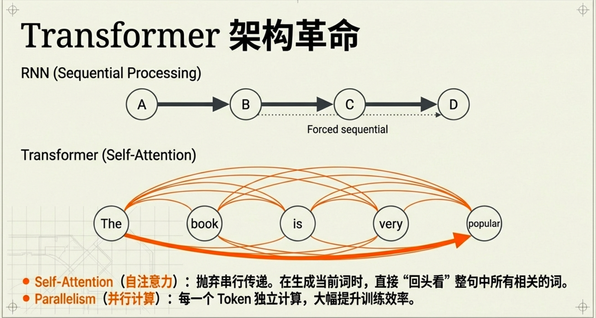
回到刚才的句子，在 was 这个位置，Transformer 可以直接给 book 很高权重，给中间那一大串很低权重。book → was 是一跳直连，不需要经过中间所有词。
现在我们可以非常清楚地说，Transformer 的“特别之处”不是更复杂，而是这 3 件事：
- 不再有“一步一步传的记忆”
- 每个 token 都能“主动选择”要看的历史
- 所有 token 可以同时处理（并行）
3.1.2 Transformer 架构解析
（1）Encoder-Decoder 整体结构
Transformer 最初提出于论文Attention Is All You Need，它解决的是一个典型的“序列到序列”问题，例如：机器翻译、摘要生成、问答系统。
整体结构分为两部分：输入序列 → Encoder → 中间表示 → Decoder → 输出序列。
Encoder 在做什么？
它的任务是把输入序列编码成一组“上下文相关表示”，也就是说，每个 token 不再是孤立的 embedding，而是已经“理解了整段话”的表示。
如果输入是：The animal didn't cross the street because it was tired.
那么在 Encoder 输出中，“it” 的表示已经和 “animal” 强关联，“tired” 会和 “animal” 建立联系。
Encoder 的内部结构是：
多层：
Self-Attention
→ FFN
→ Self-Attention
→ FFN
→ ...每一层都在“重新解释”整段句子。
Decoder 在做什么？
它的目标是基于 Encoder 的输出 + 已生成部分，预测下一个 token。
Decoder 有两个注意力模块：
- Masked Self-Attention（不能看未来）
- Cross-Attention（看 Encoder 输出）
所以 Decoder 的一层结构是：
Masked Self-Attention
→ Cross-Attention
→ FFN在 GPT 类模型中，只保留 Decoder（因为只做语言建模）。
（2）从自注意力到多头注意力
Transformer 的核心创新，是 Self-Attention。什么是 Self-Attention？
它的核心思想是每个 token，都可以“主动查看”整段序列。它不再依赖“记忆传递”，而是直接计算相关性。
计算过程公式为：
\(\mathit{Attention}(Q, K, V) = \mathit{softmax}\left(\frac{QK^T}{\sqrt{d}}\right)V\)
具体含义：
- Q、K、V 本质上只是同一个向量的三种不同线性投影。它们没有“天然语义”。它们只是为了完成一种计算结构而被拆开的三个角色。
每个 token 都会生成 Q、K、V。
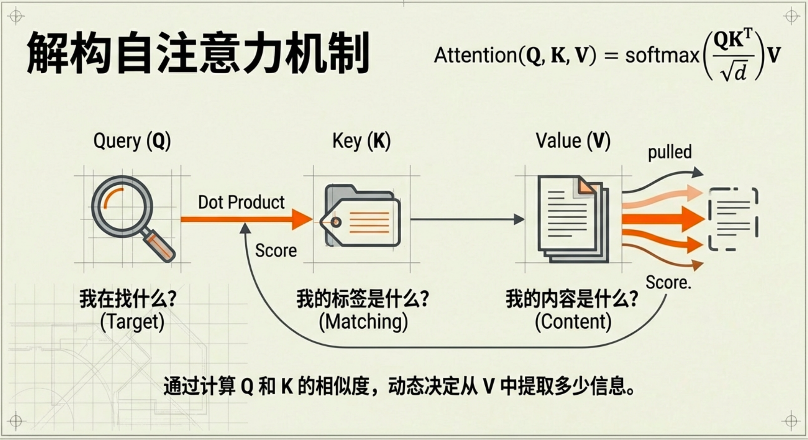
然后当前 token 的 Q 与所有 token 的 K 做相似度计算，通过 softmax 归一化，对所有 V 做加权求和。结果就是当前 token 得到一个融合整段信息的新表示。
假设一句话
I love you，经过 embedding + 位置编码后，每个 token 变成一个向量x₁, x₂, x₃。维度比如是 512。现在 Transformer 做的第一件事，是对每个 x 做三次线性变换： \(\begin{aligned} Q &= XW_Q \\ K &= XW_K \\ V &= XW_V \end{aligned}\)这3个W是三组可学习参数矩阵，它们只是不同的投影矩阵。也就是说同一个 token 表示，被投影到了三个不同的子空间。
为什么要多头（Multi-Head）？
语言中有多种关系，比如语法依赖、指代关系、时间顺序、情绪关联、逻辑因果。
一个注意力头只能学到一种投影关系。于是 Transformer 并行使用多个注意力头。多头的本质是在不同子空间里独立学习关系。这使模型能同时捕捉多种结构。
（3）前馈神经网络
在每个注意力层之后，都会接一个前馈网络：
Linear
→ 激活函数（ReLU / GELU）
→ Linear维度通常是：
\(d_{\text{model}} \rightarrow 4d_{\text{model}} \rightarrow d_{\text{model}}\)
关键特性：
它对每个 token 独立作用
不再混合 token 之间信息
只是提升非线性表达能力
你可以理解为Attention = 建立关系，FFN = 深加工表达。没有 FFN，模型的表达能力会严重受限。
（4）残差连接与层归一化
Transformer 可以堆叠很多层（12层、24层、甚至上百层）。如果没有稳定机制，深层网络会难以训练。
每个子层输出：
\(x + \textit{Sublayer}(x)\)
这来自 Deep Residual Learning for Image Recognition。
可以这么理解，子层不是替换原表示，而是在原表示上“修正”。这样即便训练不充分，也不会破坏已有信息。
残差连接（Residual Connection/Skip Connection）是一种用于深层神经网络的结构，通过在层与层之间引入直接的“短路”（shortcut），允许输入跳过一个或多个中间层，直接与输出相加，公式为 (y=f(x)+x)。
LayerNorm 在每一层后对表示进行标准化，用于控制数值尺度、防止梯度爆炸、提高训练稳定性。
残差 + LayerNorm 的组合，使 Transformer 能够非常深。
（5）位置编码
Attention 本质上是一个“集合运算”。它本身不知道顺序。如果不给顺序信息：
dog bites man
man bites dog这两句，在模型看来可能是一样的。因此必须显式加入位置信息。
原始论文中的位置编码使用正弦余弦函数：
\(\begin{aligned} PE(pos, 2i) &= \sin\left(\frac{pos}{10000^{2i/d}}\right) \\ PE(pos, 2i+1) &= \cos\left(\frac{pos}{10000^{2i/d}}\right) \end{aligned}\)
本质是为每个位置生成一个唯一、可区分的向量。现代模型也使用可学习位置嵌入或相对位置编码。
Transformer 在结构层面完成了三件关键事情：
- 不再压缩历史为单一状态（区别于 RNN）
- 允许所有 token 显式交互（Self-Attention）
- 通过多层堆叠形成深度非线性函数近似
整体流程是：
输入 embedding
+ 位置编码
↓
多层：
Self-Attention
→ FFN
→ 残差 + LayerNorm
↓
输出概率分布它没有改变语言模型的数学目标。它改变的是条件概率函数的结构化近似方式。
3.1.3 Decoder-Only 架构
Transformer 有三种结构形态，
| 结构 | 代表模型 | 核心输出 | 典型用途 |
|---|---|---|---|
| Encoder-Only | BERT, RoBERTa | 上下文向量表示 (hidden states) | 理解任务（分类、NER、相似度） |
| Encoder-Decoder | T5, BART, 原版Transformer | 序列生成的概率分布 | 翻译、摘要、改写 |
| Decoder-Only | GPT系列, LLaMA, Claude | 下一个token的概率分布 | 文本生成、对话 |
Encoder-Decoder 生成过程（以翻译为例）：
源语言: “我喜欢学习” → Encoder → 上下文向量 [h1, h2, h3, h4] ↓ Decoder 生成（一步一步，不能跳）： ━━━━━━━━━━━━━━━━━━━━━━━━━━━━━━━━━━━步骤0: 输入 [
] ↓
输出token的概率分布 → 选 “I”
步骤1: 输入 [
, I] ↓
输出token的概率分布 → 选 “like”
步骤2: 输入 [
, I, like] ↓
输出token的概率分布 → 选 “studying”
步骤3: 输入 [
, I, like, studying] ↓
输出token的概率分布 → 结束 ━━━━━━━━━━━━━━━━━━━━━━━━━━━━━━━━━━━最终: “I like studying”
选择策略：Greedy、Beam Search、Sampling。
Decoder-Only = 只用 Transformer 的 Decoder 堆叠来做自回归生成的架构。
它解决的核心问题不是“理解一句话是什么意思”，而是给定前文，下一步最可能出现什么 token？
最开始讲语言模型基础的时候，提到语言模型要解决的问题是：在已经出现了一段文字的情况下，所有可能的下一个词，各自出现的概率是多少？
Decoder-Only刚好跟这个问题对得上，Decoder-Only 模型，本质上就是一个高容量的条件概率函数近似器。它没有额外任务，它不“理解世界”，它只做一件事：
\(P(t_i \mid t_1, \ldots, t_{i-1})\)
一切能力，都是从这个目标函数里长出来的。这个函数输出下一个token的概率分布，基于之前长度为i-1 个token序列。
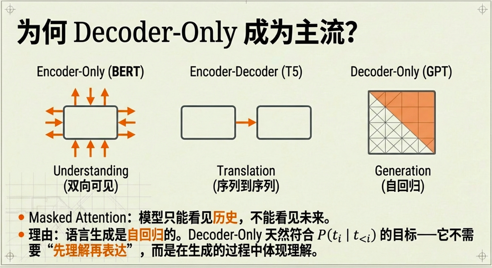
你可能会问一个很自然的问题，既然最初的 Transformer 是 Encoder-Decoder，为什么现在主流大模型几乎都是 Decoder-Only？
答案非常直接——因为语言建模目标本身就是自回归的，
回忆一下我们最开始说的语言模型的职责只有一个输出“下一个 token 的概率分布”。
Decoder-Only 天然就是为这个目标设计的，它只能看历史（Masked Self-Attention），而且每一步预测下一个 token，不需要额外结构。在大规模数据 + 大参数规模下，它已经足够强。很多你以为是“理解”的能力，其实只是在海量文本中，学习到了非常稳定的条件概率结构。
到这里，我们必须区分两个完全不同的过程：
| 阶段 | 发生什么 | 是否生成文本 |
|---|---|---|
| 训练 | 学条件概率 | 不生成 |
| 推理 | 用条件概率采样 | 生成 |
训练时，模型不会“自由生成”。它拿到一整段真实文本，比如：
我今天去了学校
训练过程是这样的：
输入：我
目标：今天
输入：我 今天
目标：去了
输入：我 今天 去了
目标：学校
输入：我 今天 去了 学校
目标：<eos>每一步都在预测下一个 token、计算交叉熵损失、反向传播、调整参数。
整个训练目标可以写成：
\(\mathcal{L} = -\sum\limits_{i}\log P(t_i \mid t_1, \ldots, t_{i-1})\)
也就是说最大化真实文本的联合概率。模型只被要求给真实下一个 token 更高概率。
推理阶段才开始“生成”。现在你给它一句话开头：
我今天去
模型输出一个概率分布：
{
上班: 0.41
学校: 0.27
医院: 0.08
…
}接下来发生的不是“模型选择”，而是“解码策略选择”。
贪心：选最大概率
top-k：只在前 k 个里采样
top-p：选累计概率达到 p 的集合采样
temperature：调节分布陡峭程度
生成不是模型的一部分，它只是概率分布之上的一个外部决策过程。这点非常关键。
为什么规模会带来能力？
这是一切大模型讨论的核心。从数学角度看，模型规模变大只意味着参数更多、函数空间更复杂、拟合能力更强。但为什么会出现长文本一致性、推理能力、代码生成、多语言迁移、类推能力。
这是一个非常简单的统计事实，当参数规模足够大，数据足够多，模型开始逼近真实语言分布。语言本身包含逻辑结构、因果关系、数学表达、程序代码、科学知识、常识。模型在在拟合人类写下的、包含知识的文本分布。当它足够接近这个分布时，你观察到的“能力”自然出现。这不是本质改变，只是函数逼近能力的量变。这一点必须说清楚。语言模型没有世界模型、真实感知、意图、自主目标。
它只是一个条件概率函数近似器。如果你问它2 + 2 = ?，它之所以能答 4， 不是因为它做了符号推理， 而是因为在训练数据里， “2 + 2 = 4” 的条件概率极高。如果你问一个复杂推理问题， 它做的也不是“思考”， 而是在生成过程中， 通过中间 token 逐步提高正确答案的概率。所谓“Chain-of-Thought”， 只是让模型生成更多中间 token， 从而改变条件概率路径。
我们从一句话开始：语言模型是什么？
现在你可以给出一个更完整但更冷静的回答：语言模型不是“生成文本的机器”， 它是一个定义在 token 序列上的条件概率函数。从 n-gram 到 RNN 到Transformer，目标函数没有变过。
变化的只是如何结构化近似这个函数、如何在高维空间中共享参数、如何处理长程依赖、如何稳定训练深层网络。
大语言模型的出现，不是目标改变，而是函数逼近能力跨过了一个阈值。
据说DeepSeek 的 think 模式，底层仍然是 Decoder-Only Transformer。
think 模式不是换了结构，它只是被训练成在某些任务上，生成中间 token 能提高最终 token 的条件概率。think 模式 = 强制模型展开中间推理 token。
这就很有意思了，大语言模型只会计算条件概率，所以当你“想要一个正确答案 A”，模型真正做的不是“推理”，而是在寻找一条 token 路径，使得你这个正确答案的条件概率尽可能大。
大语言模型学到了训练数据分布下的条件概率结构，它不是学“真实世界”。它学的是真实世界在文本里的统计投影。这是一个非常重要的区分。现实世界包含物理规律、因果关系、社会规则、人类行为。
但模型只看到人类写下的文字，它学到的是人类如何描述世界。如果某个事实，经常被写出来 → 概率高，很少被写出来 → 概率低，从未被写出来 → 概率接近 0。模型不关心真假。它只关心频率结构。
资料多少决定概率形状训练数据本质上定义了概率空间的形状。如果某个领域文本很多数学，编程，英语。模型在这些区域会形成稳定概率结构。如果某个领域文本极少，冷门语言、小众文化、未公开知识，模型就几乎没有统计支撑。
结果就是高频区域 → 模型“像专家”，低频区域 → 模型“像猜测”，这是数据密度差异。
模型靠谱的条件，条件概率分布陡峭且稳定。
不靠谱的条件，条件概率平缓且稀疏。
当多个 token 选择概率接近时， 模型其实是在“猜”。
真正危险的不是“它不知道”。危险的是它在低密度区域仍然必须输出。语言模型无法说“概率空间为空。”，它只能输出最高的那一个。 哪怕最高的只是 0.09。
一般来说，怎么判断模型靠不靠谱，问问：
- 这个问题在互联网是否大量出现？
出现多 → 稳定，出现少 → 危险 - 这个答案是否高度约束？
规则清晰 → 稳定，开放创造 → 漂移 - 是否需要实时外部事实？
需要 → 不可靠，不需要 → 更稳定
3.2 与大语言模型交互
3.2.1 提示工程
从前面我们已经知道，大语言模型本质上是一个高维条件概率函数。模型并不会“理解你的意图”，它只是在当前条件下，输出一个词表概率分布。从这个角度看，“提示工程（Prompt Engineering）”就变得非常清晰。
提示词不是“给模型下命令”。提示词是在人为构造条件变量，改变概率分布形状。
当你输入请用严谨的学术语言解释 Transformer。 你并不是在“激活学术模式”。你是在增加一段条件信息，使得学术风格 token 的条件概率升高，口语表达 token 的条件概率降低。
好的提示词，不是“更复杂”， 而是让目标 token 的概率分布更加陡峭、更加集中。如果提示模糊，条件空间宽泛，模型只能在一个平缓分布里采样，这样子模型猜的可能性更多。
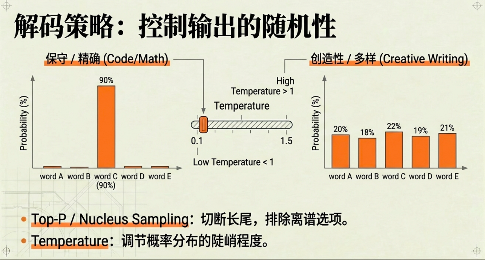
模型采样参数
模型每一步都会输出完整词表概率分布。但“选哪个 token”不是模型决定的，而是解码策略决定的。
a.Temperature
Temperature 是对 softmax 结果的一个缩放因子，它控制概率分布的“平滑程度”。
T < 1 → 分布更陡峭（高概率更高，低概率更低）
T = 1 → 原始分布
T > 1 → 分布更平缓（更多 token 有机会被选中）
Temperature 不改变模型知识， 它改变的是分布锐度。
写代码、做数学题 → T = 0 ~ 0.3
正常回答 → T = 0.5 ~ 0.8
创意写作 → T = 0.8 ~ 1.2
b.Top-k
只在概率最高的 k 个 token 中采样。缩小搜索空间，它控制“搜索空间大小”。
k=1 → 等于贪心（Greedy）
k=5 → 只在前5个里选
k=50 → 给更多选择空间
希望稳定输出 → k 小
希望多样性 → k 大
c.Top-p（nucleus sampling）
选择最小的一组 token，使它们的累计概率 ≥ p。假设排序后：上班: 0.41 学校: 0.27 医院: 0.08 超市: 0.07。
Top-p=0.7，那么0.41 + 0.27 = 0.68（还不够），加上 0.08 = 0.76（超过 0.7），所以只保留前三个。
Top-p 更稳定，因为它适应不同问题的分布形态。现代系统通常使用temperature + top-p零样本、单样本与少样本提示
这部分从条件概率角度看，会非常清晰。
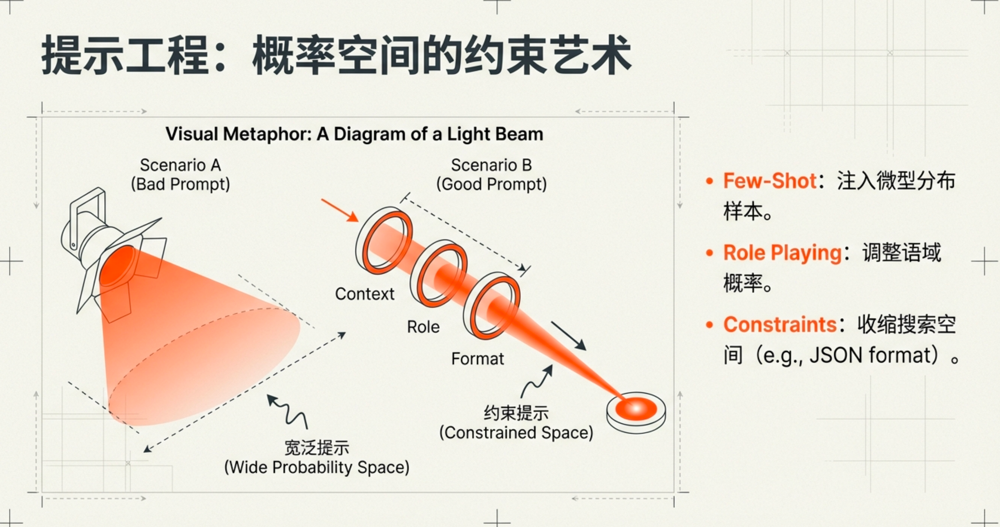
a.零样本（Zero-shot）
直接给任务说明，只给任务描述，不给例子。模型只能依赖预训练中已有分布。
请把这句话翻译成英文。
b.单样本 / 少样本（One-shot / Few-shot）
提供示例作为任务映射样本。你给出示例，这相当于在条件中注入任务映射样本，示例会显著改变分布结构。中文：我喜欢苹果 英文：I like apples 中文：我喜欢香蕉 英文：示例改变条件空间。模型会把“中文→英文映射”这个结构强烈注入当前分布。它在条件里加入一个小型数据分布。
指令调优的影响
在预训练模型之上，用“人类指令-回答对”继续训练，它不是在增加知识，它在重新塑形输出偏好，改变了分布形状。基础提示技巧
所有提示技巧，本质上都在控制概率空间。可以归纳为三种策略：
a.收缩输出空间
明确格式、长度、结构。
“用三点回答”/“输出 JSON”/“不超过 200 字”
这会大幅收缩概率空间。
b.提供结构模板
请按以下结构分析这个问题：1.现象描述 2.根本原因3.可能后果4.解决路径
提前约束输出骨架，减少漂移。
c.明确角色设定
“你是一名数学教授”
它改变的是语域 token 的条件概率。思维链
从概率视角看，思维链的本质非常清楚。让中间序列变长，它不是让模型“更聪明”，而是让正确答案的条件概率上升。多生成几步，本质是扩展概率路径。
思维链有效，是因为它在构造一个新的条件序列使最终答案变成一个“更自然的续写”。模型不需要再直接从问题预测答案，而是生成一个中间序列。如果训练数据里没有大量“类似题目→直接答案”的例子，那这个条件概率分布会是若干候选数字，他们之间概率差距不大，该分布相对平缓，这时候模型“猜”的成分就高。
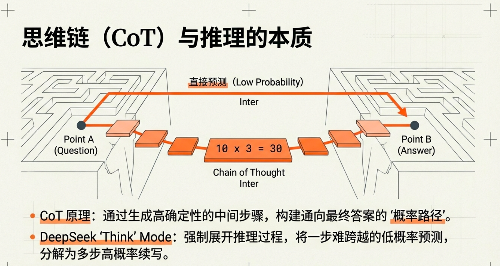
如果中间推理 token 被写出来。关键变化发生在这里，每一步推理本身也是一个高概率续写。这些推导步骤，在数学语料中是高度频繁的，前面推导已经把概率空间收缩了。
举例来说：
假设有一个 4 位密码，正确答案是7392。你现在有两种方式去猜。
1 直接猜最终答案
你一次性猜 4 位数字。模型的任务相当于，在 0000 ~ 9999 之间选一个最可能的。空间是 10,000 种。哪怕模型“感觉”7392比较合理，它仍然是在一个非常大的空间里做选择。它需要一步跨越 4 个决策。
2 一步一步锁定
现在我们换一种方式，假设你知道了第一位是7，第二位是3，第三位是9，现在最后一步要预测的空间是什么？不是 10,000 种了。是 10 种。只剩最后一位。而且前面 739 已经形成强约束。此时7392在这个局部空间里是“自然续写”。
没有中间步骤就相当于你要直接猜，有中间步骤相当于每一步都在缩小空间。
问题：
一个班有 10 人，每人有 3 本书，一共有多少本？
直接问答案的话，模型要在很多数字里选一个。可能100，20，30……
它需要一步跳到 30。
加入思维链：
第一步：每人3本
第二步：10个人
第三步：10 × 3 = ?
因此答案是：
现在最后一步只是在“续写一个乘法表达式”。在语料中10 × 3 = 30是一个高频结构。
所以30在这个局部上下文中几乎是“唯一自然的续写”。
当然，思维链不是保证正确，它的效果取决于真实文本分布的结构质量，如果分布健康，它帮你收敛到正确区域；如果分布混乱，它帮你更稳定地走错。
3.2.2 文本分词
- 为何需要分词
计算机在内部只能处理数字。要让模型处理文本，必须先把文本转换成数字序列。把文本转换成一串“可编号的符号”的过程，叫做分词（Tokenization）。分词器（Tokenizer）是把文本转换成模型可处理的符号序列的工具。
语言模型在做的事情是根据前面已经出现的符号，预测下一个符号出现的可能性。但模型不能对“无限可能的字符串”做预测。它必须在一个有限的符号集合里做选择。这个有限集合，就是分词器定义的词表。
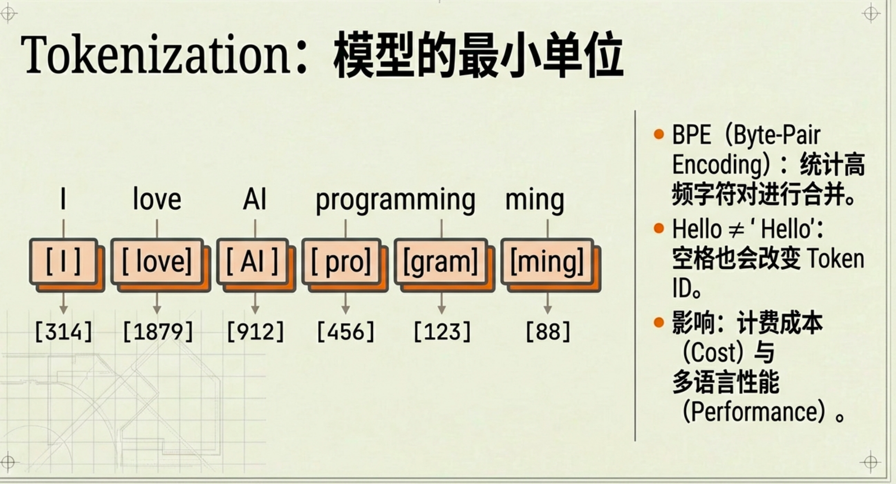
换句话说分词器决定了模型世界里的“最小单位”。模型不是直接预测“单词”或“句子”，它预测的是分词器定义的这些单位。如果这些单位不同，模型学习到的语言结构也会不同。你可以这样理解：就像化学里，如果你的最小单位是“分子”，和最小单位是“原子”，你能描述的结构层级是不一样的。分词器的作用，不只是把文本切开。它实际上决定了模型建模语言时所使用的基本单位。
按词分词 (Word-based)
按字符分词 (Character-based)
子词分词 (Subword Tokenization) - 字节对编码算法解析
字节对编码 (Byte-Pair Encoding, BPE) 是最主流的子词分词算法之一。
在“训练分词器阶段”的输入是一大堆文本语料，训练阶段输出的是一套“合并规则” + 一个词表（vocabulary），使用阶段输出的是一串 token（以及对应的编号）模型看到的是这些编号。
BPE 的核心思想非常简单：从最小单位开始，反复把“最常一起出现的相邻字符”合并成一个新单位。
它的过程是：一开始，每个字符都是一个单位；统计语料中最常见的“相邻字符对”；把它们合并成一个新单位；重复这个过程很多次。最后得到一套“常见片段”。这些片段就是 token。
不同平台的词表不一样，同一个词在不同模型里的编号是不通用的。比如“你好”这个词，在模型 A 里可能是编号 101，在模型 B 里可能是 5023。正因如此，你不能直接把一个模型的输出 ID 喂给另一个模型。
在 Hugging Face (HF) 及其生态中，“模型 (Model)”和“分词器 (Tokenizer)”通常是成对出现、且不可拆分的。
模型本身是一个巨大的数学函数，它只认识数字矩阵（Tensors），不认识文本。模型 A必须使用 Tokenizer_A 将字符串转为 Input_IDs_A，模型 B 必须使用 Tokenizer_B 将字符串转为 Input_IDs_B。如果你把 Tokenizer_A 生成的编号喂给 Model_B，模型会完全理解错你的意思（比如你想说“你好”，模型 B 却以为你在输入一串乱码）。
词表不一样的话，也说明token对应的数字不一样。
模型在训练时使用了某一个固定词表，使用了某一个固定的分词规则，学习的是在这个词表上的下一个 token 概率。所以模型只能理解“它训练时用的那套 token 编号”。 - 分词器对开发者的意义
1 它决定“输入有多长”
模型的上下文长度是按 token 数算的，不是按字符。比如4k token、8k token、128k token。如果你不知道分词器怎么切，你根本不知道你的 prompt 实际多长，会不会超出上限，会不会被截断。这直接影响成本性能稳定性。
2 它决定“费用”
很多 API 是按 token 计费的。同样一句话，不同模型，不同分词器，会导致token 数可能不同。多 30% token，就多 30% 成本，这是现实问题。
3 它影响性能（尤其是多语言）
如果某语言被切得很碎，token 数变多，序列变长，注意力计算变重，推理变慢。例如，英文 1 个 token，某些语言可能被拆成 3~4 个，这会影响效果。
4 它影响 prompt 设计
例如 GPT 的分词器：” Hello”（带空格），是一个整体 token。
但”Hello”可能是另一个 token。这会影响few-shot 示例、结构控制、JSON 输出稳定性。很多“奇怪的生成错误”其实是分词问题。
5 它影响模型迁移
你不能随便换 tokenizer或者换 vocab，否则模型输出就会错位。 模型和 tokenizer 是绑定的。
如果你只是普通对话不管成本不做系统开发，那你可以完全忽略分词器。但如果你做 RAG，做长上下文拼接，做成本优化，做多语言系统，做微调，那分词器必须理解。
为什么在Hugging Face上面，模型都有一个
tokenizer.json，原来它它通常包含“词表 + 分词规则 + 其他配置”，跟模型配套使用的。
示例内容：合并规则：“merges”: [ [ “Ġ”, “Ġ” ],……,]
当两个 token 相邻出现时，并且匹配某条 merge 规则，就合并成一个新 token。
映射表：“vocab”: { “Ā”: 0, “ā”: 1, “Ă”: 2,……}
每一次你输入文本时，都必须先经过分词器（tokenizer）处理。流程其实非常固定，而且每次都会发生。
假设你输入I love AI，发生的事情是：分词器切分（或者根据模型不同，切成别的形式）：[“I”, “love”, “AI”]
转成编号：[314, 1879, 912]
模型计算：模型真正看到的是[314, 1879, 912]，然后预测下一个编号是多少？
模型输出编号：[1023]
再通过分词器“反向解码”：编号变回”!“。最后你看到完整句子。
3.2.3 调用开源大语言模型
到Hugging Face下载模型。
3.2.4 模型的选择
- 模型选型的关键考量
a 任务匹配 —— 这个模型是否真的擅长你要做的事（代码、推理、RAG、批处理、对话），别用聊天最强的去做批量分类。
b 成本与Token消耗 —— 输入单价、输出单价、平均上下文长度。长期调用时，token结构比“模型强不强”更重要。
c 上下文与稳定性 —— 是否需要长上下文？在长输入下是否稳定？是否能按格式输出？能不能持续可控？ - 闭源模型概览
OpenAI GPT 系列、Google Gemini 系列、Anthropic Claude 系列、国内主流模型。 - 开源模型概览
Meta Llama 系列、Mistral AI 系列、国内开源力量（Qwen）
3.3 大语言模型的缩放法则与局限性
3.3.1 缩放法则
缩放法则说的是这样一个经验现象：当模型参数变大、训练数据变多、计算量增加时，模型的损失会按照一种相对平滑、可预测的规律下降，而且这种下降通常呈现幂律关系。简单理解就是，只要数据、模型规模和算力按比例一起增加，性能会持续稳定提升，而不是随机波动。这条规律的重要意义在于，它告诉我们大模型能力的提升并不是神秘跃迁，而是规模驱动下的连续改进。当参数数量扩大、训练语料更丰富、优化更充分时，模型对语言分布的逼近更准确，于是推理、代码、多语言等能力自然增强。缩放法则也意味着，如果只增加模型参数而不增加数据，或者只增加数据而不扩大模型容量，收益会变小，因为三者之间存在一个平衡关系。从工程角度看，缩放法则提供了一种可预测的扩展路径，让研究者可以提前估算投入多少算力能换来多少性能提升。但它并不意味着规模无限增长就一定线性变强，因为成本、数据质量、训练稳定性和架构限制都会成为新的瓶颈。
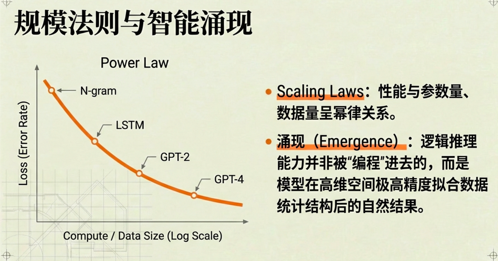
Chinchilla 定律是对缩放法则的一次修正，它指出在给定总计算预算的情况下，模型参数数量和训练数据规模之间存在一个最优比例。早期的大模型往往追求不断增加参数，但训练数据量增长不够，结果是模型容量很大，却没有被充分训练。Chinchilla 研究发现，如果算力固定，与其把大部分预算都用来扩大模型参数，不如适当减小模型规模，同时大幅增加训练数据量，这样反而能获得更好的性能。简单说，它告诉我们“更大模型”不等于“更优模型”，关键是参数数量和数据规模要匹配。按照这条规律，在计算资源一定的前提下，模型参数和训练 token 数量大致需要保持一个平衡比例，否则就会出现过大模型欠训练，或者数据不足浪费容量的情况。Chinchilla 定律的意义在于，它把规模扩展从单纯追求参数数量，转变为追求参数、数据和计算三者之间的最优配比。
3.3.2 模型幻觉
模型幻觉（Hallucination）通常指的是大语言模型生成的内容与客观事实、用户输入或上下文信息相矛盾，或者生成了不存在的事实、实体或事件。
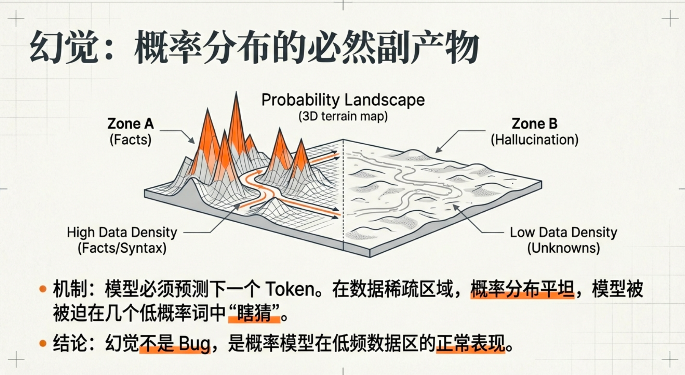
模型在回答问题时，生成了听起来合理、结构完整、语气自信，但事实上错误、编造或无法验证的内容。它不是“故意撒谎”，也不是系统崩溃，而是语言模型在概率空间中选出了一个最高概率的路径，但这条路径在现实世界里并不成立。
产生幻觉的根本原因在于模型的目标函数。模型只被训练去最大化条件概率，也就是在给定上下文时，生成最“像真实文本”的下一个 token。它的优化目标不是“说真话”，而是“生成高概率文本”。如果某个问题在训练数据中很少出现，或者没有稳定答案，模型仍然必须输出一个结果，它不会停下来承认不知道，而是选择一个在语义上最连贯、统计上最常见的表达方式。这时就容易产生幻觉。
幻觉更容易发生在几个场景下。第一是低数据密度领域，比如冷门知识、最新事件、小众人物。第二是高开放问题，比如让模型列举不存在的论文或虚构引用。第三是需要精确事实核查的问题，比如具体日期、具体数字。第四是长推理链条中，前一步的微小错误被后续放大。还有一种情况是提示本身暗示了某种不存在的事实，模型会顺着暗示生成看似合理的细节。
从机制上看，幻觉往往出现在概率分布比较平缓的区域。当多个候选 token 的概率差距不大时，模型其实是在“猜”。而语言模型无法输出“概率空间为空”这种状态，它总要给出一个最高概率选项，即便这个最高值并不高。
需要强调的是，幻觉并不意味着模型完全不可靠。在高频知识、规则明确、结构清晰的问题上，条件概率分布通常陡峭且稳定，错误率会明显降低。但在知识稀疏或开放创造任务中，幻觉风险显著上升。
对开发者来说，减少幻觉的常见策略包括引入外部检索系统，让模型基于可验证资料回答；收缩输出空间，要求引用来源或结构化输出；在关键场景加入校验步骤；以及在系统设计上允许模型承认不确定，而不是强制给出确定答案。
一句话总结，模型幻觉不是认知错误，而是概率逼近在低确定性区域的自然结果。它反映的不是模型“想象力”，而是统计结构在现实真值面前的局限。
3.4 本章小结
言模型本质上就是一个条件概率函数，它做的唯一事情是给定前面的 token 序列，输出下一个 token 的概率分布。从 n-gram 到神经网络再到 Transformer，目标函数从来没有变过，变的只是近似这个条件概率函数的方式。n-gram 用查表和马尔可夫假设截断历史，解决不了稀疏和泛化问题；前馈神经网络通过 embedding 和函数近似让相似词共享信息；RNN 引入隐藏状态试图记住历史，但长距离依赖不稳定；LSTM 通过门控机制改进记忆结构；Transformer 则彻底改变信息传递方式，用自注意力让每个 token 直接和所有历史 token 建立关系，实现并行和长程依赖建模。现代大模型多采用 Decoder-Only 结构，因为语言建模本身就是自回归的条件概率问题。训练阶段模型只是学习最大化真实文本的条件概率，不生成文本；推理阶段才通过解码策略把概率分布变成具体输出。所谓规模带来能力，本质上是模型参数、数据和算力增加后，更好地逼近了人类文本分布，而不是产生了真正的理解或世界模型。模型学习的是文本中的统计结构，而不是真实世界本身，这也是幻觉产生的根本原因。当概率分布不够陡峭或数据密度低时，模型只能在不确定区域里选一个最高概率的答案。提示工程、思维链、采样参数等方法，本质都是在调整条件空间和概率分布形状，让目标答案更自然地成为“高概率续写”。分词器则决定了模型的最小建模单位和成本结构，模型和分词器是绑定的。缩放法则和 Chinchilla 定律说明性能提升来自参数、数据和计算之间的平衡扩展。整章可以归结为一句话，大语言模型不是生成文本的机器，而是一个高容量的条件概率函数近似器，所有能力、限制和现象都可以从这个视角统一理解。
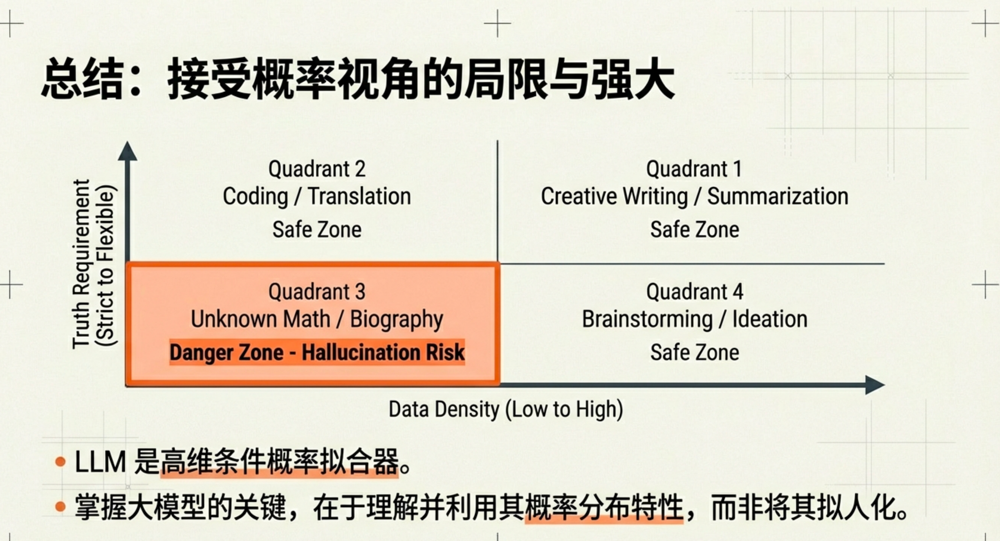